워드프로세서-2급(폐지) (2009-02-08 기출문제)
1과목: 워드프로세서 용어 및 기능
1. 관인을 찍을 때의 위치는 그 기관 또는 직위 명칭의 끝자리 인영의 어느 위치에 오도록 찍어야 하는가?
- 좌측
- 중앙
- 우측
- 어느 위치에 찍어도 상관없다.
(정답률: 81%)

2. 다음 중 문서 작성시 탭(Tab)기능 사용의 가장 효율적인 경우는?
- 일정한 간격으로 사이를 띄울 경우
- 특수한 문자를 입력할 경우
- 수학식이나 화학식을 입력해야 할 경우
- 동일한 문자를 반복하여 입력할 경우
(정답률: 88%)
3. 다음 중 워드프로세서의 삭제 기능에 대한 설명으로 옳지 않은 것은?
- Backspace[←] : 현재 커서 위치에서 왼쪽으로 이동하면서 한 문자씩 삭제
- [Delete] : 현재 커서 위치에서 왼쪽의 한 문자씩 삭제
- 블록 삭제 : 삭제 할 내용을 블록 지정하여 한꺼번에 삭제
- [Space Bar] : 수정 상태에서만 삭제가 가능하고 삽입 상태일 때에는 삭제가 불가능하다.
(정답률: 79%)
4. 다음 중 워드프로세서의 편집 기능과 관련이 없는 것은?
- 검색(Search)
- 스풀(Spool)
- 스타일(Style)
- 워드 랩(Word Wrap)
(정답률: 68%)
5. 다음 중 자기 권한에 속하는 업무의 일부를 일정한 자격자에게 위임하여 그 위임을 받은 자가 일정 범위의 위임 사항에 대하여 최고책임자를 대신하여 결재하는 것은?
- 전결
- 정규결재
- 대결
- 후결
(정답률: 65%)
6. 다음 중 직접 접근 방식이 아닌 저장장치는?
- 하드디스크
- 플로피디스크
- CD-ROM
- 자기테이프
(정답률: 78%)
7. 다음 중 전자출판에서 글자의 모양에 따라 이웃한 두 글자 사이의 간격을 늘리거나 줄이는 기능을 무엇이라고 하는가?
- 포맷(Format)
- 커닝(Kerning)
- 포매터(Formatter)
- 머지(Merge)
(정답률: 68%)
8. 다음 중 문서의 전체적인 내용은 동일하지만 수신인과 같은 일부분만 다른 문서를 여러 개 작성해야 하는 경우에 가장 유용한 기능은?
- 매크로(Macro)
- 편지병합(Mail Merge)
- 바꾸기(Replace)
- 상용구(Glossary)
(정답률: 73%)
9. 다음 중 워드프로세서로 작성한 문서를 보조기억장치에 저장하는 기능에 대한 설명으로 옳지 않은 것은?
- 작성한 문서의 일부만을 블록으로 지정하여 저장 할 수 없다.
- 원본 파일의 삭제 및 파괴에 대비하여 저장 시 백업 파일이 만들어지도록 설정할 수 있다.
- 작성한 문서는 저장 형태에 따라 다양한 파일 형식으로 저장할 수 있다.
- 문서를 저장할 때 암호(Password)를 지정하여 보안을 강화할 수 있다.
(정답률: 67%)
10. 다음 워드프로세서의 조판기능에 대한 설명 중 옳지 않은 것은?
- 각주(Footnote) : 해당 문서의 마지막에 한꺼번에 표시하는 주석을 말한다.
- 쪽 번호 : 문서의 각 페이지에 쪽 번호를 자동으로 넣어주는 기능이다.
- 두문(Header) : 문서의 각 페이지 상단에 책의 제목, 장의 제목, 페이지 번호 등과 같이 반복적으로 표시 되는 부분을 말한다.
- 미주(Endnote) : 본문에서 인용한 자료의 출처나 보충 설명 등을 표기하는 기능이다.
(정답률: 61%)
11. 다음 중 KS X1001(구 KSC-5601) 완성형 한글 코드에서 표현 가능한 한자는?
- 1,128자
- 2,350자
- 3,000자
- 4,888자
(정답률: 67%)
12. 다음 보기의 용어들과 관련이 가장 깊은 것은?
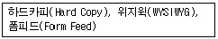
- 입력기능
- 저장기능
- 인쇄기능
- 편집기능
(정답률: 84%)
13. 다음에서 설명한 내용을 차례대로 수행 완료한 경우를 나타내는 편집 기능은?
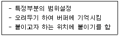
- 영역 삭제
- 영역이동
- 영역 복사
- 영역지정
(정답률: 72%)
14. 다음 중 워드프로세서 용어에 대한 설명으로 옳지 않은 것은?
- 캡션(Caption) : 표나 그림에 제목이나 설명을 붙이는 기능
- 캡쳐(Capture) : 화면상의 내용을 이미지 형태로 저장하는 기능
- 래그드(Ragged) : 문서의 오른쪽 글이 정렬이 안된 상태
- 클립아트(Clip Art) : 클립보드와 동일한 의미로 사용되는 버퍼기능
(정답률: 72%)
15. 다음 중 보조기억장치로만 짝지어진 것은?
- ROM, 하드디스크
- 스캐너, 플로피디스크
- USB 메모리, CD-ROM
- 플로터(plotter), 하드디스크
(정답률: 72%)
16. 다음 중 문서 파일의 확장자로 알맞게 짝지어진 것은?
- COM, HTM
- RTF, TXT
- LZH, ZIP
- EXE, BAT
(정답률: 82%)
17. 다음 설명이 의미하는 지시문서의 종류로 적합한 것은?
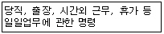
- 훈령
- 지시
- 예규
- 일일명령
(정답률: 84%)
18. 다음 교정부호 중 위로 올라간 글자를 아래로 끌어 내리는 기능의 부호는?
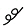
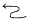
(정답률: 87%)
19. 다음 중 토글(Toggle) 키로만 짝지어진 것은?
- [F1], [Enter]
- [Esc], [Caps Lock]
- [Caps Lock], [Insert]
- [Page Down], [Shift]
(정답률: 90%)
20. 다음 보기의 문장 (가)를 문장 (나)로 수정할 때 사용되는 교정부호는?
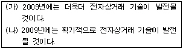
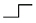
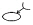
(정답률: 82%)
2과목: PC 운영 체제
21. 다음 중 한글 Windows XP에서 폴더에 관한 설명으로 옳지 않은 것은?
- 파일을 효과적으로 관리하기 위하여 폴더를 만들어 사용한다.
- 폴더는 계층적으로 관리된다.
- 폴더 이름을 변경할 때에는 제한된 문자가 사용된다.
- 폴더는 다른 하드디스크 드라이브나 다른 폴더를 포함할 수 있다.
(정답률: 57%)
22. 한글 Windows XP에서 현재 사용 중인 활성화된 창의 화면 부분만을 클립보드로 복사하는 바로가기 키는?
- [Print Screen]
- [Ctrl]+[Print Screen]
- [Ctrl]+[C]
- [Alt]+[Print Screen]
(정답률: 74%)
23. 다음 중 한글 Windows XP를 사용하는 컴퓨터에서 네트워크를 위한 하드웨어로 옳지 않은 것은?
- 하이퍼터미널
- 모뎀
- 허브
- 네트워크 카드
(정답률: 55%)
24. 한글 Windows XP의 [제어판]에 있는 [내게 필요한 옵션]을 이용하여 설정할 수 있는 것으로 옳은 것은?
- [소리] 탭에서 스피커 볼륨의 크기를 설정할 수 있다.
- [디스플레이] 탭에서 화면의 해상도를 설정할 수 있다.
- [키보드] 탭에서 키보드의 문자 반복에 대한 재입력 시간과 커서 깜박임 속도를 설정할 수 있다.
- [마우스] 탭에서 키보드의 숫자 키패드로 마우스의 포인터를 움직이도록 설정할 수 있다.
(정답률: 57%)
25. 다음 중 한글 Windows XP에서 디스크의 여유 공간을 확보하기 위하여 필요 없는 파일을 삭제하는데 사용하는 시스템 도구는?
- [시스템 복원]
- [시스템 정리]
- [디스크 조각 모음]
- [디스크 정리]
(정답률: 67%)
26. 한글 Windows XP에서 현재 사용 중인 [명령 프롬프트] 창을 종료하기 위한 명령어는?
- bye
- quite
- exit
- return
(정답률: 84%)
27. 한글 Windows XP에서 [폴더 옵션] 창의 [보기] 탭을 이용하여 할 수 있는 작업으로 옳지 않은 것은?
- 제목 표시줄에 전체 경로 표시를 설정할 수 있다.
- 숨김 파일 및 폴더 표시를 설정할 수 있다.
- 현재 등록된 파일 형식을 설정할 수 있다.
- 알려진 파일 형식의 파일 확장명 숨기기를 설정할 수 있다.
(정답률: 49%)
28. 한글 Windows XP의 [디스플레이 등록정보] 창에서 다음 보기의 내용을 설정할 수 있는 탭 항목은?
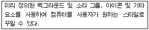
- 테마
- 바탕 화면
- 화면 배색
- 설정
(정답률: 64%)
29. 다음 중 한글 Windows XP의 [제어판]에 있는 [마우스]를 이용하여 설정할 수 없는 것은?
- 두 번 클릭의 속도를 조정하기
- 마우스 포인터의 이동 속도를 조정하기
- 마우스 포인터의 모양을 변경하기
- 한 번 클릭을 두 번 클릭으로 인식하게 변경하기
(정답률: 65%)
30. 다음 중 한글 Windows XP의 [작업 표시줄 및 시작 메뉴 속성] 창에서 설정할 수 없는 것은?
- 작업 표시줄 자동 숨기기 설정
- 열린 창의 배열 설정
- 시계 표시 설정
- 시작 메뉴 프로그램의 설정
(정답률: 50%)
31. 다음 중 한글 Windows XP에서 [탐색기] 창의 상태 표시줄에 표시될 수 있는 내용이 아닌 것은?
- 현재 사용 중인 폴더의 실제 경로
- 오른쪽의 작업 목록 창 내의 개체 수
- 선택된 개체의 크기
- 사용할 수 있는 디스크 공간
(정답률: 45%)
32. 한글 Windows XP의 [그림판] 프로그램에서 [타원]과 [직사각형] 도구를 이용하여 정원이나 정사각형을 그리려고 할 경우에 마우스의 함께 사용하는 키는?
- [Shift]
- [Alt]
- [Ctrl]
- [Home]
(정답률: 83%)
33. 한글 Windows XP의 [보조프로그램]에 있는 [엔터테인먼트]와 관련된 프로그램이 아닌 것은?
- [녹음기]
- [사운드 및 오디오 장치]
- [볼륨 조절]
- [Windows Media Player]
(정답률: 54%)
34. 다음 중 한글 Windows XP에서 인터넷을 연결하기 위한 프로토콜은?
- FTP
- Telnet
- TCP/IP
- HTTP
(정답률: 79%)
35. 한글 Windows XP의 [시스템 종료] 대화상자에서 Windows 세션을 빠르게 다시 시작하도록 컴퓨터를 절전 상태로 전환하기 위하여 선택하는 항목은?
- 대기 모드
- 로그오프
- 다시 시작
- 사용자 전환
(정답률: 67%)
36. 한글 Windows XP에서 3.5인치 플로피 디스크를 포맷할 때 사용하는 설정 항목이 아닌 것은?
- 빠른 포맷
- 압축 사용
- 볼륨 레이블
- MS-DOS 시동 디스크 만들기
(정답률: 46%)
37. 한글 Windows XP에서 CD-ROM 드라이버의 열림 버튼을 누르지 않고, CD를 열어 꺼낼 수 있는 방법으로 옳은 것은?
- [제어판]의 [시스템] 등록정보 창에서 해당 CD-ROM드라이브를 선택한 후에 바로가기 메뉴의 [사용]을 클릭한다.
- [제어판]의 [시스템] 등록정보 창에서 해당 CD-ROM 드라이브를 선택한 후에 바로가기 메뉴의 [꺼내기]를 클릭한다.
- [내 컴퓨터] 창에서 해당 CD-ROM 드라이브를 선택한 후에 바로가기 메뉴의 [꺼내기]를 클릭한다.
- [탐색기] 창에서 해당 CD-ROM 드라이브를 선택한 후에 바로가기 메뉴의 [열기]를 클릭한다.
(정답률: 62%)
38. 한글Windows XP에서 [내 컴퓨터]창에 있는 C: 드라이브에 대한 등록정보 창을 이용하여 할 수 없는 작업은?
- 디스크 검사
- 디스크 공간 늘림
- 디스크 정리
- 디스크 조각 모음
(정답률: 65%)
39. 다음 중 Windows XP에서 기본 프린터에 관한 설명으로 옳지 않은 것은?
- 사용자가 인쇄 명령을 수행하였을 경우에 자동으로 인쇄가 수행되는 프린터를 의미한다.
- 기본 프린터는 여러대 설정할 수 있다.
- 기본 프린터이면서 공유 프린터로도 사용이 가능하다.
- [프린터 및 팩스] 창에서 해당 프린터를 선택 후에 [파일] 메뉴의 [기본 프린터로 설정] 항목을 선택하면 기본 프린터로 설정된다.
(정답률: 76%)
40. 한글 Windows XP에서 사용하는 임의의 파일에 대한 등록정보 창의 [일반] 탭에서 알 수 없는 항목은?
- 파일의 형식
- 파일의 위치
- 파일의 크기
- 파일을 만든 사람
(정답률: 83%)
3과목: PC 기본 상식
41. 지적재산권이 있는 소프트웨어를 복사하여 판매하였을 경우, 어떤 법에 저촉되는가?
- 개인정보법
- 컴퓨터프로그램보호법
- 사생활침해방지법
- 통신비밀보호법
(정답률: 76%)
42. 컴퓨터에서 파일을 저장하고 관리하는 파일 시스템 중에서 NTFS를 지원하는 OS를 올바르게 짝지은 것은 무엇인가?
- DOS, Windows 3.1
- Windows 95, Windows 98
- Windows 98, Windows XP
- Windows XP, Windows 2000
(정답률: 66%)
43. 컴퓨터 기억소자의 발전 과정이 세대별로 바르게 연결된 것은?
- 2세대 - 진공관
- 3세대 - 트랜지스터
- 4세대 - 집적회로
- 5세대 - 초고밀도 집적회로
(정답률: 71%)
44. 다음 설명에 해당하는 방식으로 처리되는 운영체제는 어는 것인가?
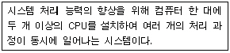
- 멀티 테스킹(multi tasking)
- 멀티 프로그래밍(multi-programming)
- 멀티 프로세싱(multi-processing)
- 멀티 미디어(multi-media)
(정답률: 52%)
45. 다음 중 데이터 통신 시스템의 특징이라고 볼 수 없는 것은?
- 아날로그 데이터 통신의 확장
- 대용량 파일의 공동 이용
- 대형 컴퓨터의 공동 이용
- 거리와 시간의 극복
(정답률: 65%)
46. 다음 중 인터넷을 통해 프로그램 소스 코드를 완전 무료로 공개하여 사용자는 원하는 대로 특정 기능을 추가할 수 있을 뿐만 아니라, 어느 플랫폼에도 포팅이 가능하게 설계된 운영체제는?
- DOS
- UNIX
- PS/2
- LINUX
(정답률: 69%)
47. 다음 중 여러 대의 하드디스크를 모아 하나의 디스크처럼 작동하게 하여 대용량의 파일을 저장할 수 있고, 하나의 파일을 여러 디스크에 동시에 저장할 수 있도록 하여 신뢰성을 높여줄 수 있는 저장장치와 관계가 가장 깊은 것은?
- ZIP-Drive
- DVD
- RAID
- Juke Box
(정답률: 68%)
48. 다음 중 직렬(Serial)방식의 I/O버스는 어느 것인가?
- VESA
- USB
- PCI
- ISA
(정답률: 79%)
49. 기존 전화선을 이용해 주파수가 서로 다른 음성 데이터(저주파)와 디지털 데이터(고주파)를 함께 보내는 방식은?
- MODEM
- CABLE
- ADSL
- ISDN
(정답률: 54%)
50. 다음 중 컴퓨터 바이러스에 대한 대비 방법으로 가장 거리가 먼 것은?
- 출처가 불분명한 프로그램을 사용하지 않는다.
- 의심스러운 전자메일은 열어보지 않는다.
- 백신 프로그램으로 정기검사를 하여 미리 예방한다.
- 다른 컴퓨터에 침입하는 해킹방법을 배워 둔다.
(정답률: 86%)
51. 다음 중 1초 동안에 실행 가능한 부동소수점 연산횟수를 표시하는 단위는 무엇인가?
- FLOPS
- MIPS
- MHZ
- BPS
(정답률: 47%)
52. 다음 중 두개의 컴퓨터를 설치하여 한쪽 컴퓨터는 대기하고 다른 한쪽 컴퓨터가 작업을 수행하다가 고장이 나면 대기하던 컴퓨터가 작동하여 작업을 수행하도록 하는 운영체제의 운영방식은?
- 분산 시스템(Distributed System)
- 듀얼 시스템(Dual System)
- 듀플렉스 시스템(Duplex System)
- 임베디드 시스템(Embedded System)
(정답률: 63%)
53. 다음 중에서 멀티미디어의 응용분야와 가장 관련이 적은 것은?
- 전자신문
- 원격의료
- 폰뱅킹
- 홈쇼핑
(정답률: 59%)
54. 다음 중 주기억장치에 대한 설명으로 옳지 않은 것은?
- 주기억장치(Dram)의 데이터 접근시간은 캐시메모리 보다 빠르다.
- 주기억장치의 각 위치는 주소에 의해서 표시된다.
- 중앙처리장치는 처리할 명령어와 이에 대한 처리 결과를 저장하는 장소이다.
- 주기억장치 내에 있는 데이터의 접근 시간은 저장된 위치에 관계없이 동일하다.
(정답률: 60%)
55. 다음 중 데이터의 전송을 위하여 전송 측에서 디지털 데이터를 아날로그 데이터로 변환시키고 수신 측에서 수신된 아날로그 데이터를 다시 디지털 데이터로 변환시켜 주는 장치는?
- 라우터(Router)
- 허브(Hub)
- 모뎀(Modem)
- 게이트웨이(Gateway)
(정답률: 62%)
56. 다음 보기의 내용은 무엇을 설명한 것인가?
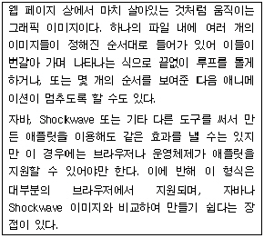
- animated GIF
- Holography
- TIFF
- QuickTime
(정답률: 67%)
57. 다음 중 진공관을 이용한 세계 최초의 계산기는 어느 것인가?
- ENIAC
- MARK-1
- EDVAC
- BINAC
(정답률: 62%)
58. 다음 중 정보통신망이 아닌 것은?
- LAN
- WAN
- MAN
- TCP
(정답률: 80%)
59. 다음 중 3차원이나 가상현실 게임 또는 인터넷 채팅에서 자기 자신을 나타내는 위한 그래픽 아이콘을 무엇이라 하는가?
- 스트리밍(Streaming)
- 아바타(Avatar)
- 데몬(Daemon)
- 캐싱(Caching)
(정답률: 87%)
60. 다음 중 HTML의 특징으로 옳지 않은 것은?
- 하이퍼텍스트 언어이다.
- 시스템에 종속적이다.
- 작성하기 용이하다.
- 크기가 작다.
(정답률: 51%)